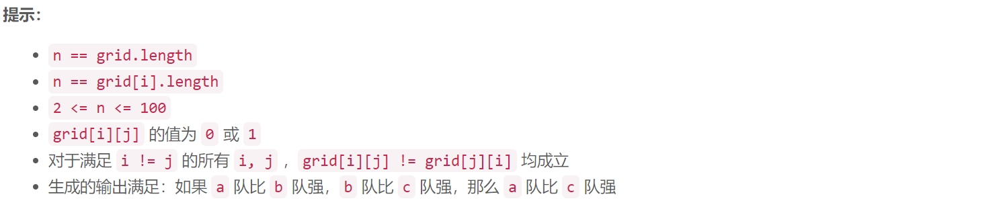
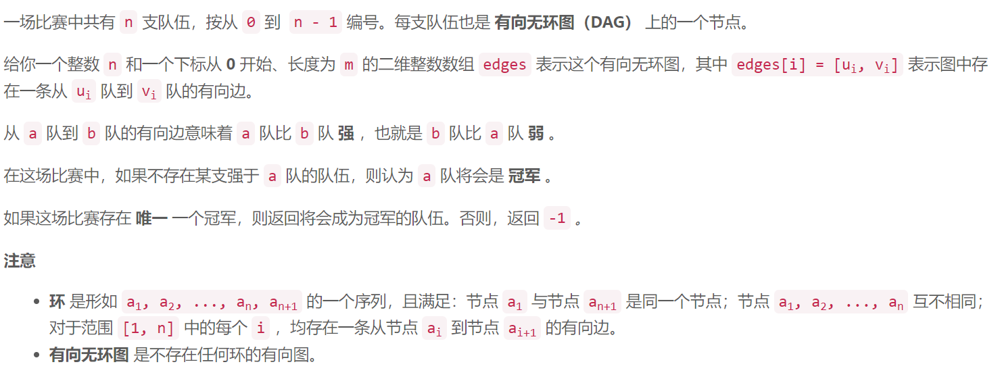
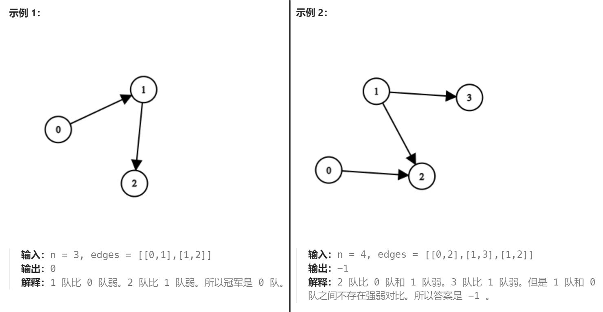
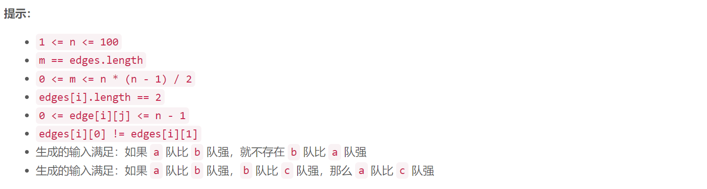
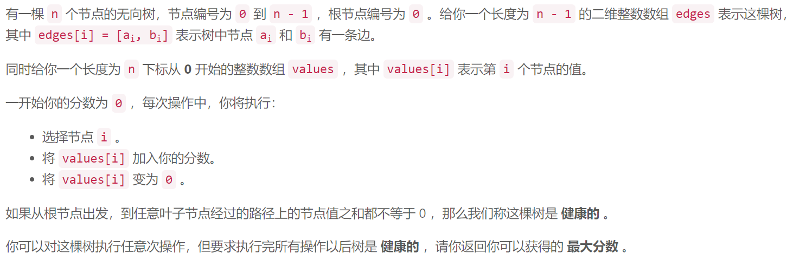
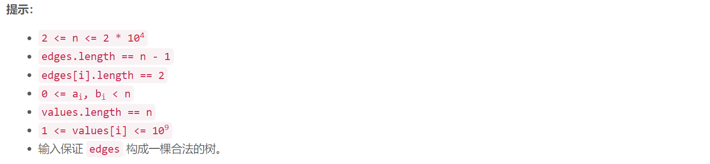
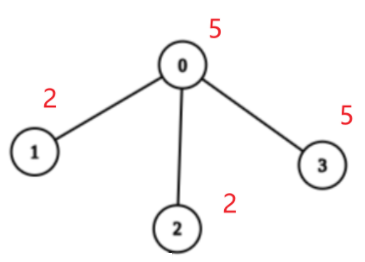
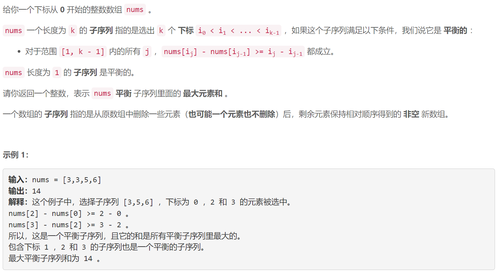
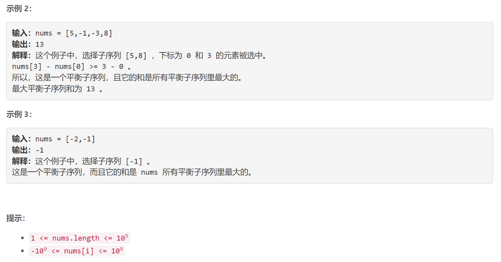

概要
力扣第 370 场周赛
本文只是周赛的总结，我不准备详细地讨论每一道题，有些题只会给出大致思路。重点还是在于自己的总结、反思和提高。
23 分钟 AC 前三题，使得排名在三百左右 —— 典型的比手速策略。做题情况简要描述：
- 第一题：送分题，但是有点卡住了，花了 5 分钟😒；
- 第二题：背景和第一题一样，同样是送分题，做得反而更快😋；
- 第三题：一道符合难度的中等题，需要稍微想一下，15 分钟做出来，不错😋；
- 第四题：没做出来。如果数据规模小的话是一道简单 dp，但没有优化思路 😒；


“如果不存在某支强于 a 队的队伍，则认为 a 队将会是 冠军 ”，因此使用 count[i] 表示比 i 强的队伍数量。使得 $count[i] = 0$ 的 $i$ 即为答案
1
2
3
4
5
6
7
8
9
10
11
12
13
14
15
16
17
| class Solution {
public int findChampion(int[][] grid) {
int n = grid.length;
int[] count = new int[n];
for (int i = 0; i < n; i++) {
for (int j = 0; j < n; j++) {
if (i == j) continue;
if (grid[i][j] == 1) count[j]++;
else count[i]++;
}
}
for (int i = 0; i < n; i++) {
if (count[i] == 0) return i;
}
return -1;
}
}
|



用有向边表示谁比谁强，明显比第一题好理解。边 $(a,b)$ 表示 $a$ 比 $b$ 强，因此那些最强的队伍的入度为 $0$。统计入度即可。
1
2
3
4
5
6
7
8
9
10
11
12
13
14
15
16
17
18
| import java.util.Arrays;
class Solution {
public int findChampion(int n, int[][] edges) {
int[] inDeg = new int[n];
Arrays.stream(edges).forEach(e -> inDeg[e[1]]++);
long count = Arrays.stream(inDeg).filter(i -> i == 0).count();
if (count != 1) return -1;
for (int i = 0; i < n; i++) {
if (inDeg[i] == 0) return i;
}
throw new Error();
}
}
|



$\forall i, values[i] \ge 1$，并且“从根节点出发，到任意叶子节点经过的路径上的节点值之和都不等于 0”。因此，我们在执行操作时，每条从根节点到叶节点的路径上，都要留一个节点不去操作。（多条路径可能共用一个不操作的节点）
令图中所有节点的集合是 $V$，我们不操作的节点的集合为 $U$，则“对这棵树执行任意次操作，但要求执行完所有操作以后树是 健康的 ”，得到的分数为 $\sum\limits_{v\in V} v - \sum\limits_{u\in U}u$。$\sum\limits_{v\in V} v $ 即为 sum(values)，因此，为了使分数最大，我们不操作的节点之和 $\sum\limits_{u\in U}u$ 应该尽可能地小。那么，应该不操作哪些节点呢？
对于树的任意一棵子树，比如下图：

假设我们不操作根节点 0，那么剩余的节点都可以操作；假设我们操作了根节点 0，那么剩余的节点中存在不能操作的节点。这里的剩余节点可能是叶节点，也可能是多棵子树，无论是什么，都不影响该结论。
那么什么时候操作根节点？定义一棵以 $u$ 为根节点的健康的子树中不操作的节点的最小和为 $res(u)$，则 $\forall x, x$ 是 $u$ 的子节点, $res(u) = \min\set{values[u], \sum\limits_x res(x)}$
该递归式的含义是：
- 要么不操作根节点 $u$，此时这棵树是健康的，剩余的所有子节点都可以操作；
- 要么操作根节点 $u$，但是 $u$ 的所有子树都需要保证自己是健康的；
- 根据定义，我们要得到最小和，因此取两者情况的较小值；
对于上述例子，$res(1) = 2,res(2) = 2,res(3) = 5$
$values[0] = 5 < \sum\limits_{x\in\set{1,2,3}}res(x) = 9$，因此不操作根节点 $0$，而操作其所有子树中的节点。
有了 $res(u)$ 的递推式，上述 $\sum\limits_{u\in U}u$ 的值就是 $res(0)$，因此，最大分数是 sum(values) - res(0)
代码：
1
2
3
4
5
6
7
8
9
10
11
12
13
14
15
16
17
18
19
20
21
22
23
24
25
26
27
28
29
30
31
32
33
34
35
36
37
38
39
40
41
42
43
44
45
46
47
48
49
50
51
52
53
54
55
56
57
58
| import java.util.ArrayList;
import java.util.Arrays;
import java.util.stream.IntStream;
class Solution {
static class Node {
public Node(int val, int index) {
this.val = val;
this.index = index;
}
ArrayList<Node> children = new ArrayList<>();
int val;
int index;
}
public long maximumScoreAfterOperations(int[][] edges, int[] values) {
int n = values.length;
Node[] nodes = IntStream.range(0, n).mapToObj(i -> new Node(values[i], i)).toArray(Node[]::new);
Arrays.stream(edges).forEach(e -> {
nodes[e[0]].children.add(nodes[e[1]]);
nodes[e[1]].children.add(nodes[e[0]]);
});
boolean[] visited = new boolean[n];
visited[0] = true;
long sum = Arrays.stream(values).mapToLong(i -> i).sum();
long min = dfs(nodes[0], visited);
return sum - min;
}
private long dfs(Node root, boolean[] visited) {
int count = 0;
long min = 0;
for (Node child : root.children) {
if (visited[child.index]) {
count++;
continue;
}
visited[child.index] = true;
min += dfs(child, visited);
visited[child.index] = false;
}
if (count == root.children.size()) {
return root.val;
}
return Math.min(root.val, min);
}
}
|


重新读题：平衡子序列中连续的两个元素 nums[i] 和 nums[j] 需要满足 $i < j$ 且 $nums[j] - nums[i] \ge j -i$
对上述不等式移项，得到 $nums[j] - j \ge nums[i] - i$ —— 左右两边的各项都只关于其下标，而与其他条件无关
因此，这道题类似于最长递增子序列，用 DP 解决：
DP 定义：dp[j] 表示以 nums[j] 结尾的 平衡 子序列里面的 最大元素和
递推式：$dp[j] = nums[j] + \max\set{dp[i] | (i < j) ∧ (nums[j] - j \ge nums[i] - i)}$
代码：
1
2
3
4
5
6
7
8
9
10
11
12
13
14
15
16
17
18
19
20
21
22
| class Solution {
public long maxBalancedSubsequenceSum(int[] nums) {
int n = nums.length;
long ans = Long.MIN_VALUE;
long[] dp = new long[n];
for (int j = 0; j < n; j++) {
dp[j] = nums[j];
long max = 0;
for (int i = 0; i < j; i++) {
if (nums[j] - j >= nums[i] - i) {
max = Math.max(max, dp[i]);
}
}
dp[j] += max;
ans = Math.max(ans, dp[j]);
}
return ans;
}
}
|
问题在于，这么做显然是 $O(n^2)$ 的时间复杂度，比赛时我也没想出如何优化。
我准备在下一篇博客中详细描述如何做出这道题（基于大佬的题解），现在先让我去学习相关知识。